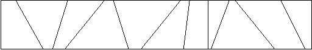

Calculate the number of toys that land in each bin of a partitioned toy box.
Mom and dad have a problem - their child John never puts his toys away
when he is finished playing with them. They gave John a rectangular box
to put his toys in, but John is rebellious and obeys his parents by simply
throwing his toys into the box. All the toys get mixed up, and it is impossible
for John to find his favorite toys.
John's parents came up with the following idea. They put cardboard partitions
into the box. Even if John keeps throwing his toys into the box, at least
toys that get thrown into different bins stay separated. The following
diagram shows a top view of an example toy box.

For this problem, you are asked to determine how many toys fall into
each partition as John throws them into the toy box.
The input file contains one or more problems. The first line of a problem
consists of six integers, n m x1 y1 x2 y2. The
number of cardboard partitions is n (0 < n
<= 5000) and the number of toys is m (0 < m
<= 5000). The coordinates of the upper-left corner and the lower-right
corner of the box are (x1,y1) and (x2,y2),
respectively. The following n lines contain two integers per
line, Ui Li, indicating that the ends
of the i-th cardboard partition is at the coordinates (Ui,y1)
and (Li,y2). You may assume that the cardboard
partitions do not intersect each other and that they are specified in sorted
order from left to right. The next m lines contain two integers
per line, Xj Yj specifying where the
j-th toy has landed in the box. The order of the toy locations is
random. You may assume that no toy will land exactly on a cardboard partition
or outside the boundary of the box. The input is terminated by a line consisting
of a single 0.
column 11111111112
12345678901234567890
line 1:5 6 0 10 60 0[EOL]
2:3 1[EOL]
3:4 3[EOL]
4:6 8[EOL]
5:10 10[EOL]
6:15 30[EOL]
7:1 5[EOL]
8:2 1[EOL]
9:2 8[EOL]
10:5 5[EOL]
11:40 10[EOL]
12:7 9[EOL]
13:4 10 0 10 100 0[EOL]
14:20 20[EOL]
15:40 40[EOL]
16:60 60[EOL]
17:80 80[EOL]
18: 5 10[EOL]
19:15 10[EOL]
20:25 10[EOL]
21:35 10[EOL]
22:45 10[EOL]
23:55 10[EOL]
24:65 10[EOL]
25:75 10[EOL]
26:85 10[EOL]
27:95 10[EOL]
28:0[EOL]
:[EOF]
Other than the standard header and trailer messages, the output for each
problem will be one line for each separate bin in the toy box. For each bin,
print its bin number, followed by a colon and one space, followed by the
number of toys thrown into that bin. Bins are numbered from 0
(the leftmost bin) to n (the rightmost bin). Separate the output
of different problems by a single blank line.
The correct output corresponding to the example input file above would
be
column 111111111122222222223
123456789012345678901234567890
line 1:Program 3 by team 0[EOL]
2:0: 2[EOL]
3:1: 1[EOL]
4:2: 1[EOL]
5:3: 1[EOL]
6:4: 0[EOL]
7:5: 1[EOL]
8:[EOL]
9:0: 2[EOL]
10:1: 2[EOL]
11:2: 2[EOL]
12:3: 2[EOL]
13:4: 2[EOL]
14:End of program 3 by team 0[EOL]
:[EOF]
This problem will be judged on accuracy and efficiency. Solutions requiring more than 10 second of CPU time on the judge's test data will be rejected.
The judges recommend that you use double precision values for internal calculations to avoid overflow problems